Link naar pagina: Agendabundel Geen bevindingen.
Samenvatting
Wij hebben de content van de website noordholland.bestuurlijkeinformatie.nl onderzocht tussen 21 en 23 augustus 2025. Op dit moment zijn 26 van de 33 succescriteria als voldoende beoordeeld. In dit rapport lees je wat er bij de overige 7 nog fout gaat, en hoe je dat kunt verbeteren.
In opdracht van

-
Voldoet
-
Afgekeurd
55
Totaal
- voldoet
Impact
Klein: 0
Medium: 0
Groot: 0
Type
Content: 0
Techniek: 0
Waarneembaar
- van 20
Bedienbaar
- van 20
Begrijpelijk
- van 13
Robuust
- van 2
Deze SC zijn afgekeurd:
Over dit onderzoek
- Onderzocht door
- Julia van Proper Access
- Opdrachtgever
- provincie Noord-Holland
- Leverancier techniek
- iBabs
- Datum rapport
- 23 augustus 2025
- Standaard
- WCAG 2.2
- Methodologie
- WCAG-EM
Scope van het onderzoek
- Alle pagina's op de website noordholland.bestuurlijkeinformatie.nl
- Alle PDF's op de website noordholland.bestuurlijkeinformatie.nl
- Niet de pagina's op het subdomein.website.nl
Buiten scope:
- Subwebsite(s) waarbij de HTML en/of het systeem afwijkt van de onderzochte website
- De van derden afkomstige inhoud (wettelijke uitzondering voor de overheid)
Basisniveau toegankelijkheidsondersteuning
- Mozilla Firefox, versie 139
- Google Chrome, versie 139
- Apple Safari, versie 18
- PAC software to test PDF
- NVDA schermlezer in combinatie met Firefox
- VoiceOver schermlezer in combinatie met Safari
- Andere gangbare browsers en hulpapparatuur
Technologieën van de website
- HTML
- CSS
- JavaScript
- WAI-ARIA
- SVG
Voortgang opgeloste bevindingen
Samenwerken met je team
Exporteer alle bevindingen als CSV-bestand. Je kunt het in een (online) spreadsheet inladen om met je team samen te werken.
Importeer in Jira
Exporteer alle bevindingen als Jira-compatibel CSV-bestand. Je kunt het direct importeren via Jira > Issues > Import issues from CSV.
Zelf bijhouden in de browser
Houd per bevinding bij of het is opgelost. Je voortgang wordt opgeslagen in jouw browser. Niemand anders kan je resultaat zien.
0 van
0 opgelost
Gevonden problemen
Filter bevindingen op:
Impact:
Type:
Status:
Geen bevindingen gevonden voor dit filter.
#1 - De link om het logo kan niet met stem worden bediend
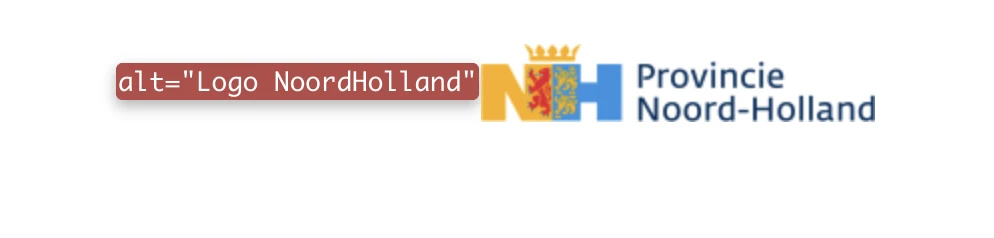
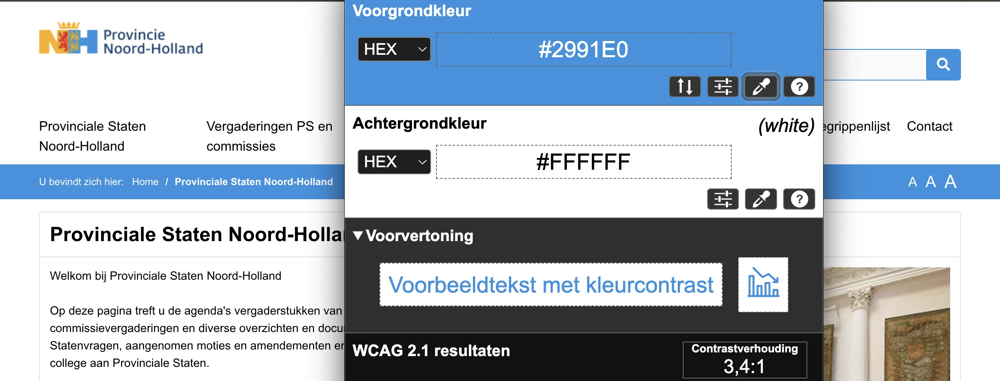
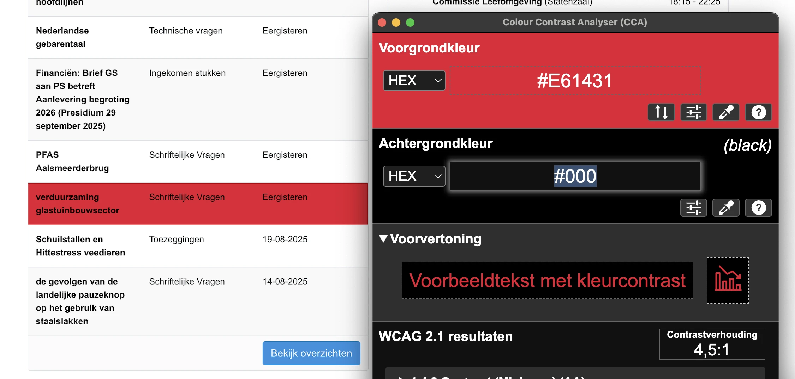
Als een bezoeker de muis over de links in de tabel onder “Overzichten en documenten” beweegt, verandert de achtergrond van de tekst in rood terwijl de kleur van de tekst zwart blijft. De contrastratio wordt 4,5:1. Dit voldoet aan de eisen van WCAG, maar blijft moeilijk leesbaar. Om de leesbaarheid van deze tekst te vergroten raden we je aan om de kleur van tekst naar wit te veranderen.
Link naar pagina: Begrippenlijst Geen bevindingen.
Link naar pagina: Boer, Aletta den
strong-element in plaats van kop-element
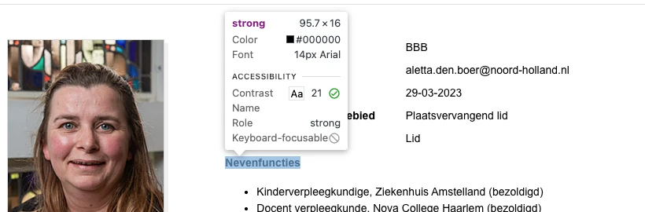
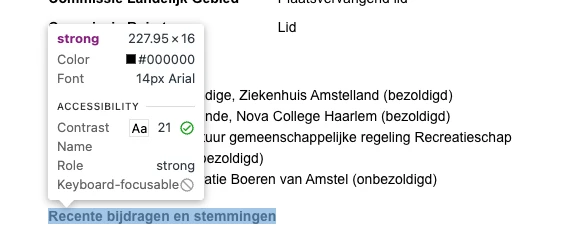
Link naar pagina: Contact
#2 - Kop is niet gemarkeerd als koptekst
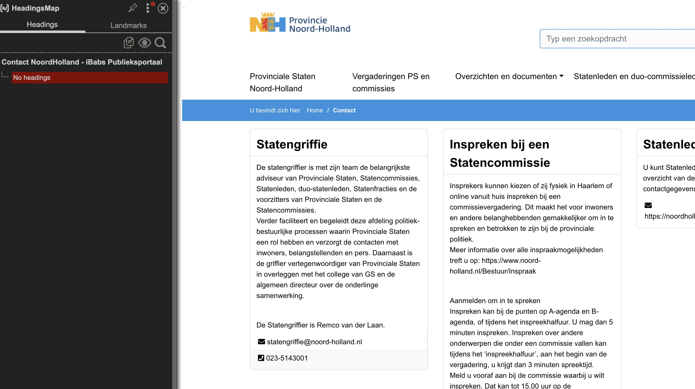
Link naar pagina: Freeman, Walter Geen bevindingen.
Link naar pagina: Gezondheid en Milieu: Brief Tata Steel over Voortgang Groen Staal Geen bevindingen.
Link naar pagina: Home Geen bevindingen.
Link naar pagina: Klein, Michel Geen bevindingen.
Link naar pagina: Overzichten en documenten Geen bevindingen.
Link naar PDF: Advies-uittreksel cpt-verslag cie Bestuur Subsidievaststelling fractiebijdragen 2023-2024.pdf
#3 - Informatieve afbeelding is als achtergrondafbeelding geplaatst
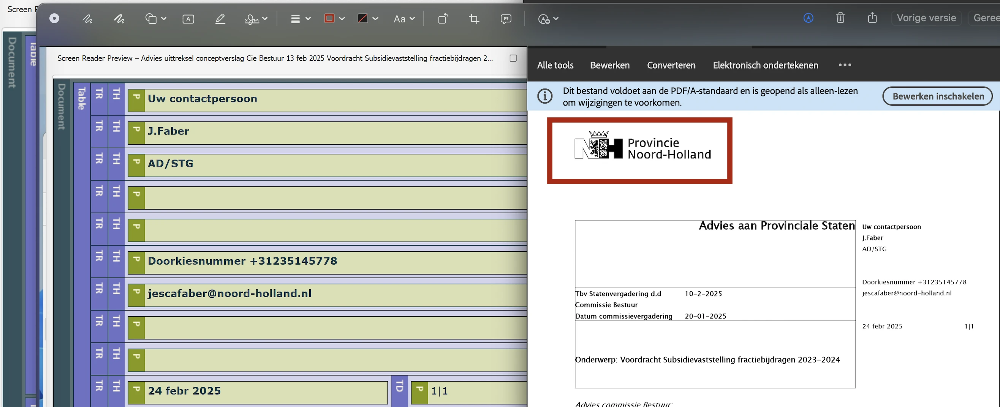
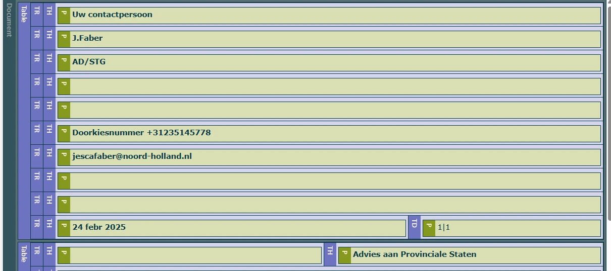
In dit pdf-document zijn verschillende koppen niet gemarkeerd als koppen. Zie "Advies aan Provinciale Staten", "Onderwerp: Voordracht Subsidievaststelling fractiebijdragen 2023-2024". Op deze manier verschilt de visuele informatiestructuur van de structuur van het document in de tags.
Oplossing:
Vervang de P-tag door de H-tag, zodat de tag-structuur gelijk is aan de visuele structuur.
Link naar PDF: Agendabundel.pdf
#4 - PDF-document heeft geen titel
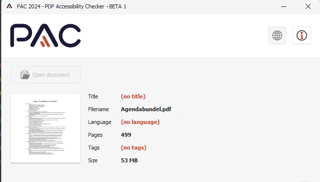
- Open het pdf-document in Adobe Acrobat.
- Ga naar Bestand > Eigenschappen.
- Ga naar het tabblad Beschrijving.
- Vul in het veld Titel een beschrijvende titel in, bijvoorbeeld: "Rapport: Bevolkingscijfers 2023".
- Klik op OK en sla het bestand op.
#5 - De taal is niet ingesteld in de metadata
In de metadata van deze pdf is de taal niet ingesteld. Het is belangrijk om de taal in te stellen. Dan kan hulpsoftware de informatie uit het bestand met de juiste uitspraakregels voorlezen.
Los het op in Adobe Acrobat:
- Open het pdf-document in Adobe Acrobat.
- Ga naar Bestand > Eigenschappen.
- Ga naar het tabblad Geavanceerd.
- Selecteer in het veld Taal de juiste taal voor het document, bijvoorbeeld Nederlands (Dutch).
- Klik op OK en sla het bestand op.
#6 - Structuur van pdf-document is niet in codes vastgelegd
In dit pdf-document ontbreken codes, waardoor de inhoud niet toegankelijk is voor schermlezers. Bovendien kunnen wij de pdf hierdoor niet volledig onderzoeken. Het gaat om alle succescriteria die met de pdf-codelaag te maken hebben, zoals semantische koppen en alternatieve teksten bij afbeeldingen. Als je dit oplost, is het dus mogelijk dat er nieuwe toegankelijkheidsproblemen ontstaan die nu nog niet aan het licht zijn gekomen.
Oplossing:
Voeg codes toe aan het document die de structuur van het document weergeven.
#7 - Alleen kleur gebruikt in legenda bij grafiek
In dit pdf-document staan op pagina 477-479 grafieken. Kleur wordt gebruikt om informatie te geven. Zie de legenda en de balken in de grafiek. Alleen mensen die de kleuren kunnen zien en van elkaar kunnen onderscheiden zien welke balk / lijn bij welke categorie in de legenda hoort. Dit kan opgelost worden door naast kleur bijvoorbeeld ook verschillende soorten arcering te gebruiken.
Oplossing:
Gebruik naast kleur bijvoorbeeld ook verschillende soorten arcering of voeg datalabels toe.
#8 - Kleurcontrast van kleine tekst is te laag
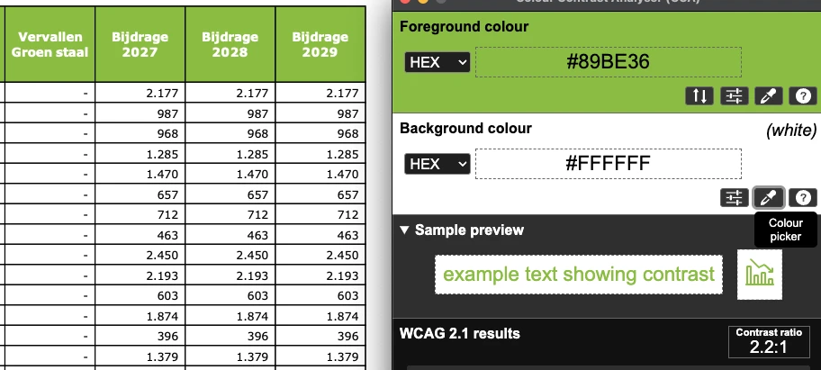
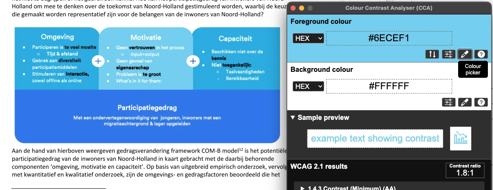
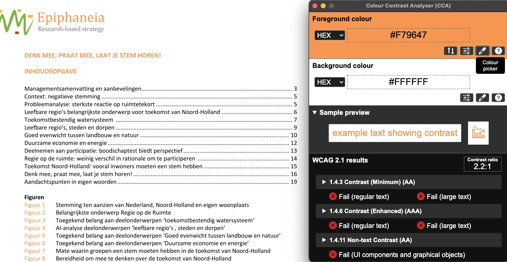
Link naar pagina: PS-vergadering
em-element is gebruikt voor opmaak
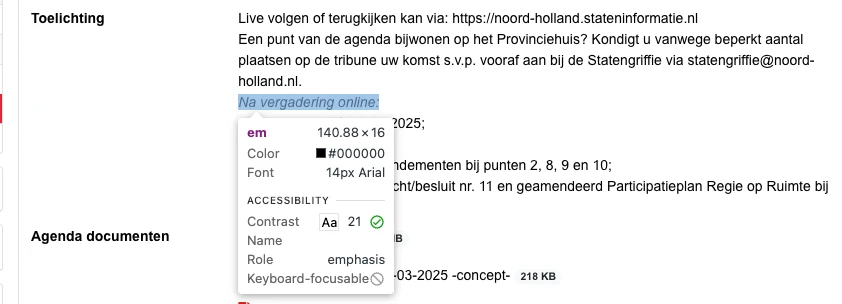
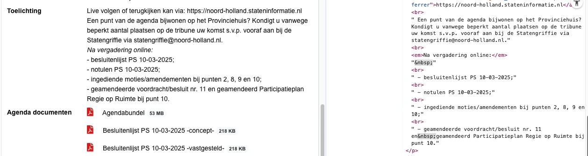
Link naar pagina: Schuilstallen en Hittestress veedieren Geen bevindingen.
Link naar pagina: Statenleden Geen bevindingen.
Link naar pagina: Statenleden en duo-commissieleden
#9 - Kop is niet gemarkeerd als koptekst
Over dit onderzoek
Leeswijzer
Onze rapporten zijn anders. Bij het bespreken van de gevonden problemen volgen wij niet de structuur van de norm, maar die van jouw website of app. Hierdoor kun je gewoon per pagina of scherm aan de slag gaan. Wel zo makkelijk! Je vindt verderop een overzicht van alle pagina’s met problemen.
We geven je bij elk gevonden issue een paar voorbeelden, maar niet een complete lijst. Controleer zelf of het probleem ook nog op andere plekken voorkomt. Zie het rapport als een leidraad.
Gebruikte norm
Dit onderzoek laat zien in hoeverre de website op dit moment voldoet aan WCAG 2.2, niveau A en AA. WCAG staat voor Web Content Accessibility Guidelines. Dit is de internationale norm voor digitale toegankelijkheid. De Europese norm EN 301 549 bevat alle eisen van WCAG op niveau A en AA.
In dit rapport hebben we korte beschrijvingen van de succescriteria uit de norm opgenomen, met een algemene uitleg erbij. Wil je ze helemaal lezen? Bekijk dan de documentatie van WCAG.
Gebruikte onderzoeksmethode
We gebruiken de onderzoeksmethode WCAG-EM van het W3C. Het proces ziet er als volgt uit:
- vaststellen wat binnen en buiten scope valt
- vaststellen welke technologieën zijn gebruikt
- steekproef (sample) samenstellen
- steekproef onderzoeken
- gevonden issues beschrijven
Het grootste deel van het onderzoek doen we met de hand. Voor een deel van de toegankelijkheidseisen gebruiken we automatische tools als ondersteuning, zoals axe-core en Chrome Developer Tools.
Belangrijk om te weten
Dit rapport helpt je om de toegankelijkheid van je website te verbeteren. Maar let op: het is geen definitieve, volledige lijst van alle aanwezige toegankelijkheidsproblemen. Dat zit zo:
Het is een steekproef
Ten eerste is het onderzoek gebaseerd op een steekproef. Die is op een betrouwbare manier genomen, en de meeste problemen zullen daardoor zeker aan het licht komen. Toch kan een probleem net buiten de steekproef vallen. Bij een volgend onderzoek kan het wel ontdekt worden.
Op basis van falsificatie
We beoordelen vanuit het principe van falsificatie. Dat houdt in dat we proberen te bewijzen dat iets niet waar is, in plaats van te bevestigen dat het klopt. ‘Voldoet’ betekent daarom dat we geen reden hebben gevonden om een punt af te keuren. Maar als we later wél een reden vinden, kan het alsnog worden afgekeurd.
Voortschrijdend inzicht
Het komt voor dat de beoordeling van een succescriterium op detailniveau verandert. De norm beschrijft namelijk niet élk mogelijk scenario. Samen met andere onderzoeksbureaus overleggen we hoe we met bepaalde situaties omgaan. Zo kan iets dat nu wordt afgekeurd, soms bij een volgend onderzoek worden goedgekeurd en andersom.
Oplossen leidt tot nieuw probleem
Ten slotte kan het gebeuren dat bij het oplossen van een probleem onbedoeld een nieuw toegankelijkheidsprobleem ontstaat. Dat komt dan bij een volgend onderzoek pas naar voren.
Hoe werkt dit rapport?
Bevindingen bekijken en filteren
Alle gevonden toegankelijkheidsproblemen staan onder Gevonden problemen. Je kunt de bevindingen filteren op:
- Impact (Groot, Medium, Klein, Advies) — hoe ernstig is het probleem voor de gebruiker?
- Type (Content, Techniek) — moet de inhoud of de techniek worden aangepast?
- Status (Open, Opgelost) — welke problemen zijn al verholpen?
Voortgang bijhouden
Je kunt je voortgang op twee manieren bijhouden:
- CSV-export — exporteer alle bevindingen als CSV-bestand en laad het in een (online) spreadsheet om met je team samen te werken.
- Jira-export — exporteer alle bevindingen als Jira-compatibel CSV-bestand. Importeer het via Jira > Issues > Import issues from CSV. Bevindingen worden aangemaakt als bugs met prioriteit op basis van impact.
- Registreer in de browser — activeer deze optie om per bevinding bij te houden of het is opgelost. Je voortgang wordt opgeslagen in je browser. Niemand anders kan je resultaat zien. Let op: de voortgang is gekoppeld aan je browser. Als je een andere browser of een ander apparaat gebruikt, begint de telling opnieuw.
- Plan van aanpak — download een geprioriteerd plan van aanpak om de gevonden problemen stap voor stap op te lossen. Dit is beschikbaar bij audits vanaf maart 2026.
Link naar een specifieke bevinding delen
Bij elke bevinding verschijnt een link-icoon wanneer je er met de muis overheen gaat. Klik op dit icoon om de directe link naar die bevinding te kopiëren. Je kunt deze link plakken in een e-mail of chatbericht, bijvoorbeeld om een vraag te stellen aan Proper Access over een specifiek punt.